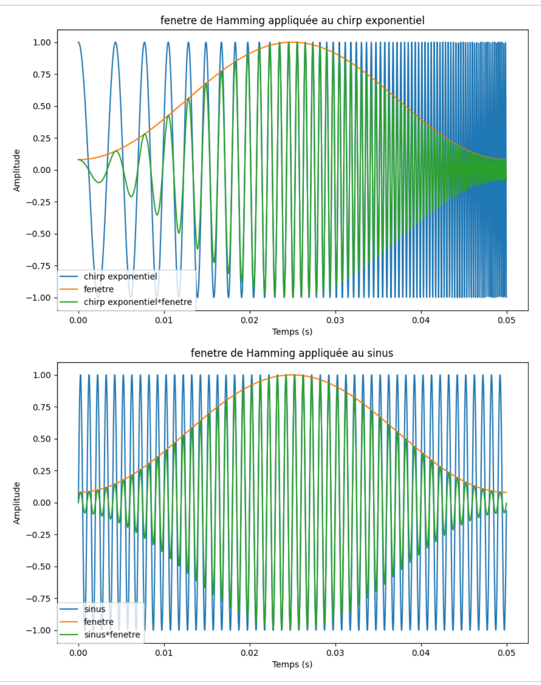
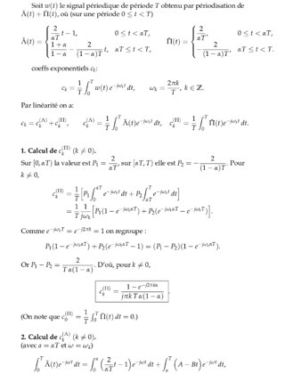
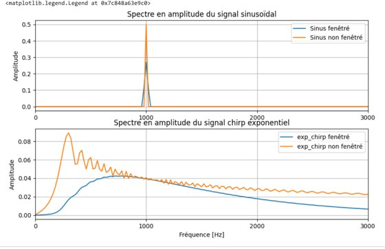
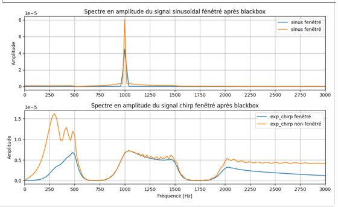
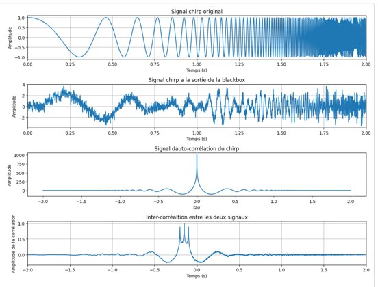
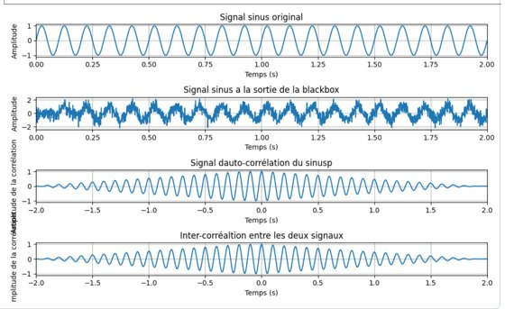

ELE2700 | 2025 and 2026
Signal analysis in Python
Windowing, chirps, correlation and sampling explored through saved notebook outputs.
- Status
- Team coursework
- Focus
- Signals
- Tools and methods
- Python / NumPy / Fourier analysis

Objective
Connect time-domain signal behavior to spectra, correlation and sampling effects.
Engineering work
- Generate periodic signals and chirps.
- Apply a Hamming window and inspect spectral changes.
- Compare auto-correlation and cross-correlation in a radar-style exercise.
- Explore aliasing and the interpretation of sampled spectra.
Outcome
The PDF notebook exports preserve code, plots and written analysis. The gallery extracts the plots themselves, without the cover-page identifiers or grading material.
Scope and limits
These are saved notebook results, not newly executed simulations. The original notebooks and course black-box modules are not distributed here.
Archive gallery 5 items










Evidence and documentation
ELE2700 TP3, TP4 and TP5 notebook PDF exports. Figure descriptions preserve the distinction between coursework and a deployed sensing system.